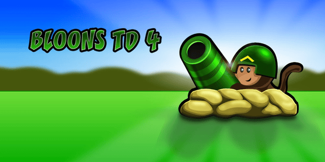
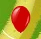
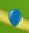
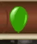
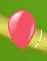
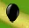
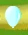
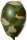
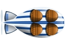
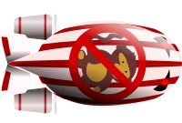

- Cost:
 15
15
- Cost: 15
- Cost: 15
- Cost: 15
- Cost: 15
- Cost: 15
- Cost: 15
- Cost: 75
Buys every premium track. Saves
Bloons Tower Defense 4 is the fourth game in your favorite tower-defense series. This is a different kind of tower-defense game, Instead of orcs, soldiers, monsters, and knights you're fighting against dangerous balloons. Yes, you heard us right. Balloons are your enemy and your objective is to pop them before they reach past the post. On your defensive team, you have a league of skilled monkeys with amazing popping skills. There are monkeys with pins and monkeys that have awesome ninja skills. On top of fighter monkeys, you have other devices like cannons and spikes that can help you to pop the balloons. This is a one-of-kind online game that requires a strategy to defeat the evil balloons!
To play this tower-defense game, first, choose your track based on your skill level and then choose the level of difficulty. Then you can set the use your mouse to select from various available defenses in the right-hand column. Once the defense is selected, choose the location on the track to place your weapon. Your weapons can be sold for cash and upgraded if needed. If the game is going to slow, you can head to the lower-right column to and hold the fast-forward button to speed things up. With every level, you’ll earn a new weapon. In the upper-right hand column, you’ll see the cash you’ve earned to see what you’re able to purchase. You’ll also see the hearts available which is the number of balloons that you can let pass you before you lose the game. Bloons Tower Defense 4 is waiting for you to defend us against bloons!
On Easy mode, things are cheaper than usual (85% of medium) and players start with 200 lives. There are 50 rounds to pass.
On Medium mode, things are regularly priced (see above) and players start with 150 lives. There are 60 rounds to pass.
On hard mode, things are more expensive (108% of medium) and players start with 100 lives. There are 75 rounds to pass.
In sandbox mode, players have 1,000,000 money and 100,000 lives. Things cost as much as in Medium mode (see above). In Sandbox mode, players can choose what Bloons to release and at what times. For example, players can click a button to release 20 Red Bloons, 5 Ceramic Bloons, or 1 MOAB. Players can try releasing other bloons as well.
Side Note: This mode is unlocked once rank 26 is achieved. Lives and Coins are NOT unlimited
In Apopalypse mode, players have as much money and lives as in Medium, and things cost as much as in Medium (see above). Once the player click the 'Start Round' button, bloons will never stop coming and continue to get stronger and stronger. Even though bloons never stop coming, rounds still exist — they are just started automatically. Therefore, Banana Farms still grant players bonus money at the end of each round. If no road spikes/monkey glue were used completely, they will still exist.
Side Note: This mode is unlocked once rank 31 is achieved.
There are many premium upgrades available in Bloons Tower Defense 4. These upgrades can be purchased with real money and can be used to enhance your gameplay.
| Name | Description | Cost | Ability | Rank to Unlock | Appearance |
|---|---|---|---|---|---|
| Dart Monkey | The Dart Monkey is the most basic tower in the Bloons Tower Defense series. It has been in every BTD game. | $200 |
Upgrades
|
1 |

|
| Tack Shooter | Shoots a volley of tacks in eight directions. Has short range, but is good for thinning out Bloons at intersections and corners. | $360 |
Upgrades
|
2 |

|
| Boomerang Thrower | Throws a boomerang that follows a curved path back to the tower. Can pop multiple Bloons at once. | $400 |
Upgrades
|
3 |

|
| Bomb Tower | Launches a bomb that explodes on impact. Can destroy many Bloons at once. | $700 |
Upgrades
|
4 |

|
| Ice Tower | Freezes nearby Bloons with every pulse. Frozen Bloons are immune to anything sharp. | $380 |
Upgrades
|
6 |

|
| Mortar Tower | Targets a specific area of ground over any distance with an explosive attack. | $825 |
Upgrades
|
7 |

|
| Glue Gunner | Shoots a glob a glue at at Bloon, slowing it down. Ceramic Bloons can be glued but will not be slowed down. | $300 |
Upgrades
|
9 |

|
| Monkey Beacon | Increases the attack range of all towers within the beacon area. Has several useful upgrades that help out nearby towers, including its ultimate ability to call in Super Monkey Storms. | $1000 |
Upgrades
|
10 |
|
| Monkey Ace | The only unit that moves, the Monkey Ace patrols the skies above the action, regularly strafing the area with powerful piercing darts. | $900 |
Upgrades
|
11 |

|
| Monkey Buccaneer | The only unit that can be placed in water - the Monkey Buccaneer has a long range and shoots a single, heavy dart. | $600 |
Upgrades
|
12 |

|
| Monkey Apprentice | Trained in the ancient arts of monkey wizardry.Learns new spells with every upgrade. This unit is flexible and will continue randomly using his old spells with his new one. | $550 |
Upgrades
|
14 |

|
| Super Monkey | Super Monkey shoots incredibly fast. Can upgrade to Laser Vision, then Plasma Vision. Ultimate upgrade is ultimately powerful. Find out for yourself... | $4,000 |
Upgrades
|
15 |

|
| Banana Farm | Generates extra money at the end of every round, but doesn't attack anything. Can upgrade to increase money bonus. | $1,000 |
Upgrades
|
16 |

|
| Dartling Gun | Shoots Darts rapidly but a little inaccurately to wherever your mouse is. You can decide exactly where this tower will shoot by moving your mouse wherever you want | $1,250 |
Upgrades
|
1 |

|
| Spike Factory | Generates piles of Road Spikes and automatically drops them on the track near by. Leftover spikes disappear after each round | $700 |
Upgrades
|
1 |

|
| Name | Cost | Description | Rank Required | Appearance |
|---|---|---|---|---|
| Road spikes | $30 | Place these road spikes on the track to pop Bloons. Can pop 10 Bloons before wearing out. Road Spikes last only until the end of the round. | 5 |

|
| Pineapple | $25 | Like all healthy food, Pineapples explode shortly after being placed, so don't put any down unless you want to blow up some Bloons. | 8 |

|
| Monkey Glue | $10 | Monkey Glue slows down Bloons. Each glob can glue twenty Bloons before wearing out. Monkey Glue only lasts until the end of the round. | 10 |

|
| Name | Hit Points | Description | Appearance |
|---|---|---|---|
| Red Ballon | 1 | Very basic and ordinary enemy, take one hit to pop |  |
| Blue Bloon | 2 | A step up from the red ballon, this is much faster and larger than a Red Bloon |  |
| Green Bloon | 3 | Faster and larger than a Blue Bloon |  |
| Yellow Bloon | 4 | Faster and larger than a Green Bloon | |
| Pink Bloon | 5 | Faster and larger than a Yellow Bloon; Fastest bloon in game |  |
| Black Bloon | 11 | Immune to explosions; Contains two Pink Bloons. |  |
| White Bloon | 11 | Immune to freezing; Contains two Pink Bloons. |  |
| Camo Bloon | 11 | Immune to detection without certain tower upgrades, but can be hit by any projectiles by any tower. Contains two Pink Bloons. |  |
| Lead Bloon | 23 | Immune to sharp objects; Contains two Black Bloons. |

|
| Zebra Bloon | 23 | Immune to explosions and freezing; Contains a Black Bloon and a White Bloon. | |
| Rainbow Bloon | 47 | Contains 2 Zebra Bloons | |
| Ceramic Bloon | 103 | Takes 9 hits to pop initial layer; Immune to slowing from glue; Contains 2 Rainbow Bloons. | |
| Massive Ornary Air Blimp (M.O.A.B.) | 612 | Takes 200 hits to pop initial layer; Immune to glue and freezing;Contains 4 Ceramic Bloons. |  |
| Brutal Floating Behemoth (B.F.B.) | 3,148 | Takes 700 hits to pop initial layer; Immune to glue and freezing; Contains 4 MOABs. |  |
| Name | Description |
|---|---|
| Challange 1 | Pass Ocean Road on Medium with only using Dart Monkeys and Super Monkeys! |
| Challange 2 | Pass Sweet Tooth on Easy using only Dartling Guns and Spike Factories! |
| Challange 3 | Defeat a wave a 50 M.O.A.B.s with $50,000. |
| Challange 4 | Pass Ant Hill on Hard without losing a single life! |